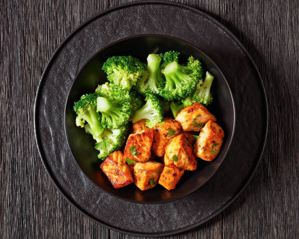

Honey Glazed Salmon Bites with Broccoli

Cubed salmon and broccoli
This perfectly cooked diced honey glazed salmon and broccoli is quick and easy.
Ingredients
- 4oz Salmon fillet
- Olive Oil
- Kosher Salt
- Cracked Black Pepper
- Honey
- Broccoli
Cooking Steps
- Remove salmon fillet from the fridge 30-45min prior to cooking.
- Pat dry with paper towels.
- Remove the skin from the salmon fillet.
- Cube the salmon fillet into bite size pieces.
- Season to your liking with Kosher salt, fresh cracked black pepper, and minced garlic.
- Preheat air fryer to 450 degrees.
- Boil a cup of water and place a steam basket in the pot of boiling water.
- Rinse broccoli.
- Place broccoli in steamer and let steam for 10min.
- Lightly coat the salmon bites in olive oil.
- Coat the salmon bites in honey until all pieces are evenly coated.
- Place in the air fryer for 10min.
- Remove from air fryer and let sit for 5min before serving.